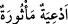
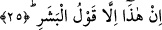
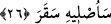

bulundum demektir. Kelimenin kök yapısı ve aslı budur. Sonra kelime kimden olursa
olsun rivâyet etmek anlamına kullanılmaya başlanmıştır. Yine bu kökten türeme: “Hadîs
me’sûr” denilir ki anlamı halefin/sonradan gelenlerin seleften/öncekilerden naklettikleri
söz, “__WORD__/ed’ıye me’sûra” ifâdesi de büyüklerden rivâyet edilen duâlar demektir.
Herhagi bir hikmete dayalı olarak sihri öğrenmeye ruhsat verilmiştir. Fakat bunun
gerçek olduğuna inanmak ve sihir yapmak küfür sayılmıştır. Nitekim yukarda işâret
ettiğimiz hikmet gereği şöyle bir söz vardır:
Öğrendim şerri değil gâyem şerr, isterim korunmak,
Öğrenmezsen halkın şerrini, âkıbetin bilki şerre uğramak
Sihrin ne demek olduğu ve bununla ilgili diğer söylenecek şeyler daha önce ilgili
yerlerde geçmişti.
25. Bu, insan sözünden başka bir şey değil.»
Bu cümle daha önce yukarıda geçen cümleyi te’kid etmektedir. Bu nedenle başında
atıf harfi yer almamıştır. Velid bu sözü serkeşlik ve inadından dolayı söylemiştir. Yoksa
inanarak dile getirmiş değildir. Çünkü yukarıda geçen ve Kur’an’ın “insan ve cinlerin
sözü olmadığı” yolundaki ikrarı bunu göstermektedir. Velid burada yer alan “beşer”
kelimesiyle Yesâr, Cebr ve Ebû Fukeyhe’yi kasdetmektedir. Bu üç kişiden ilk ikisi Fars
diyarından Mekke’ye gelmiş köleler idiler. Peygamber (s.a.) Efendimiz onların
yanlarında otururdu. Sonuncusu olan Ebû Fükeyhe ise Bizans’lı bir Rum olup
Yemame’de bulunan Müseylimetü’l-Kezzâb tarafından zaman zaman Mekke’ye
gönderilirdi.
26. Ben onu sekara (cehenneme) sokacağım.
Sekar kelimesini cehennem olarak tefsir ettik. Çünkü Cevherî’nin es-Sıhâh’ında’ında
Sekar kelimesinin cehennemin isimlerinden birisi olduğu kaydediliyor.
İbn Abbas (r.a.) ise Sekar’ın cehennemin altıncı tabakası olduğunu söyler. Arapçada;
“Sekarathu eşşemsu” denir ki anlamı “güneş filancaya eziyet ve elem verdi” demektir.
Cehenneme sekar denmesi içinde bulunan kimseye elem ve acı vermesinden dolayıdır.
Bu âyette yer alan “seuslîhi sekar” ifâdesi daha önce onyedinci âyette geçen
“seurhikuhû saûden/ben onu sarp bir yokuşa süreceğim” ifâdesinden bedel-i iştimaldir.